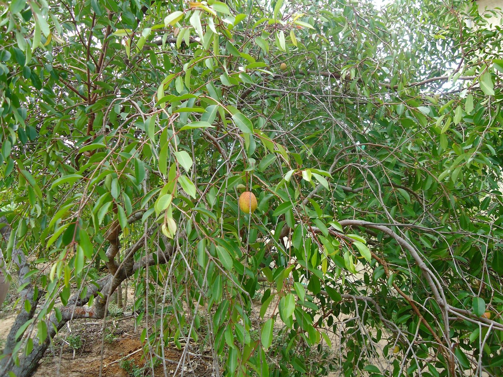

Beneficíos da Mangaba
A mangaba é uma fruta rica em vitamina A, B1, B2 e C, além de ferro, fósforo, cálcio e proteínas. A fruta só pode ser consumida quando madura, pois quando verde pode causar problemas de saúde. Com ampla aceitação no mercado, a mangaba pode ser consumida in natura ou na forma de sucos, sorvetes, doces, geleias e licores, o que gera renda para comunidades como a do Jalapão, no estado do Tocantins, além de constituir importante matéria-prima para as agroindústrias de sucos e sorvetes do Nordeste e Centro-Oeste.
Caracteristicas da Mangaba
A mangabeira é uma árvore de porte médio, com altura variando de 4 a 7 m, podendo chegar até 15 m, de crescimento lento, copa ampla, às vezes mais ramificada que alta. O tronco é geralmente único, tortuoso ou reto, com 0,2 a 0,3 m de diâmetro. Os ramos são inclinados, numerosos, separados e bem formados. Os ramos jovens são de coloração violácea, lisos até um ano de idade, meio angulosos, curtos, com poucas folhas, floríferos no ápice. Caule rugoso e áspero com duas a três bifurcações na altura média de 40 a 50 cm da base. Toda a planta exsuda látex de cor branca ou róseo-pálida.O fruto
Em geral, a mangabeira apresenta, no litoral do Nordeste, duas florações e frutificações durante o ano, o que caracteriza duas safras: uma de verão, que vai de dezembro a abril; e outra de inverno, que vai de maio ao início de julho. Pequenas variações podem ocorrer dependendo da região.